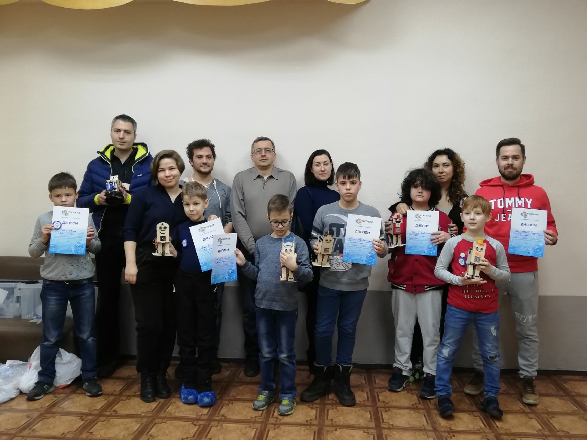
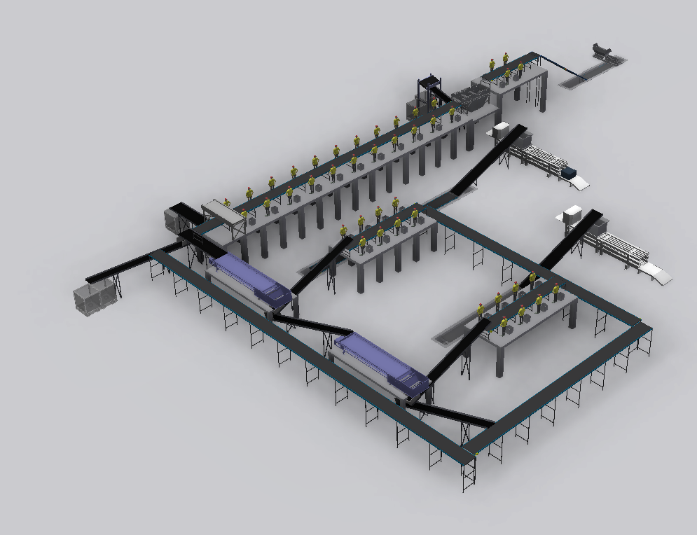
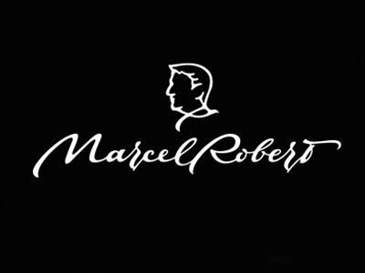
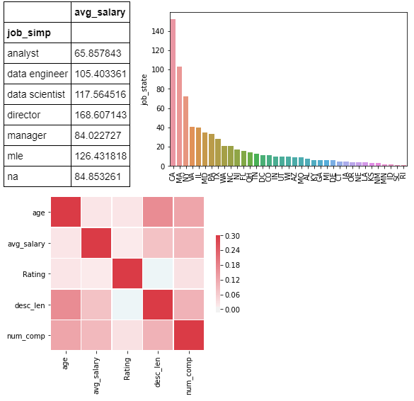
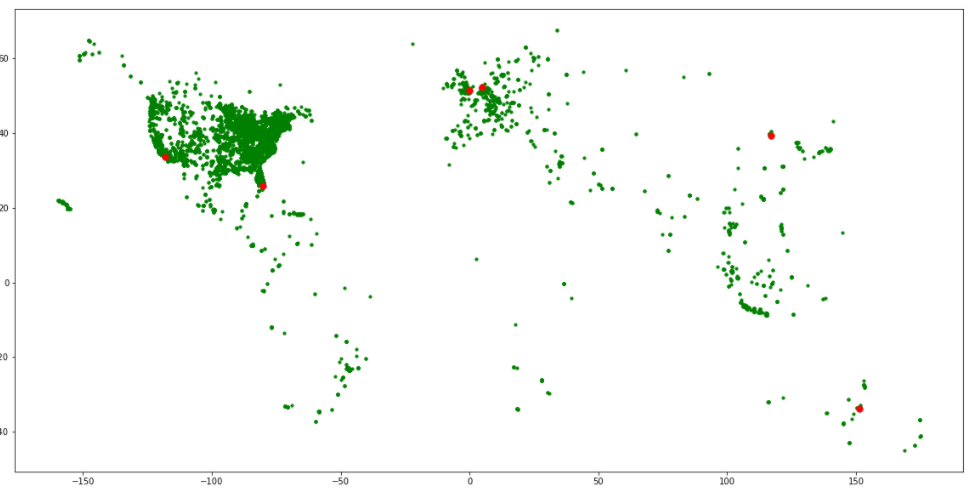
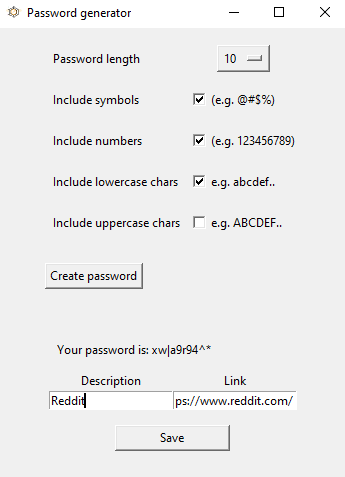
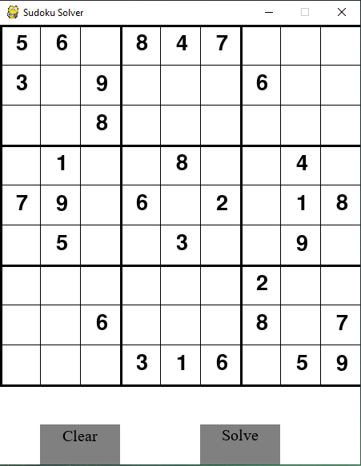

About me

Hello, My name is Alexandr Kotov. I've just graduated from the best technical university of Russia. I was studying plasma and space technologies for 6 years. So you can call me a rocket scientist.
I started to get interested in programming few years ago when I started working as a teacher of robotics. I worked a lot with Arduino which based on C++. Then I started to learn Python, which I immediately fell in love with for its simplicity and clarity.
I'm freelancing in my free time on UpWork, mostly take some simple projects for web-scrapping. I'm also interested in making some simple gaming bots using OpenCV. Sometimes I do data science projects to get some relevant experience. Some of my project I posted on github and you can find it on my project page.
Education
Bauman Moscow State Technical University, Moscow | 2014 - 2020
Specialty: Design of aviation and rocket engines
Department of plasma power installations

Hobbies
Sports
Sport is a big part of my life. One greatest achievement in my life would have to be my success in the sport of cheerleading.
I started practicing at the age of seventeen.
Cheerleading is a team-based sport that involves stunting, pyramids, baskets, tumbling, acrobatics.
It was initially started in the USA, and now its growing sport in Europe. Why? Because it’s fun!
It’s a great sport because it’s teamwork, it’s all about athletes working together in unison to create something spectacular.
What have I achieved during all these years of cheerleading? On a first year our team became a second best student team in Moscow and 4th team in Russia. Then after a few years we evolved and became a Russian Champions twice in 2018 and 2019. After that we had an honor to represent our country at the Europe Championship in Helsinki and St. Petersburg.

Travelling
When I have decent amount of free time I use it to visit a new place. Preferable way to travel is usually hitchhiking. Cheap, fun and challenging. Plus it's the best way to meet locals and get to know a lot about real local mindset and culture!
I've visited about 30 countries so far and going to increase this number. You can find more about my travels on my social media here.

Skills
Python
SQL
Machine Learning
Pandas
Numpy
Scikit Learn
TensorFlow
HTML
Tableau
Arduino

Work experience
1. Robotics teacher
Era of engineers | Jan'19 - Aug'20
Spearheaded an engineering skills class for 6-15 y.o. students.
Teach electrical engineering, soldering, programming on Arduino, drawing in CAD
programs, 3D modeling and robotics.
Helped with creating new projects for kids, such as plotter, walking robot, smart lamp, manipulator.

2. Design engineer
Ekomtech | Dec ’19 - Jul'20
Optimized five computer-based design and modeling software
programs to design and construct various projects.
Created and implemented 10+ designs for waste recycling plants and
garbage trucks.
Changed design process and started modeling all processes and
designs in 3D for a better presentation for customers.

3. Design engineer
Marcel-Robert | Dec ’18 – Aug ‘19
Designed 5 unique machines for improving manufacturing process.
Designed and produced all necessary solid parts for leather products
(3-D printing and making draws for metal parts)
Fixed and improved machines on factory.

Certificates
Coursera - Applied Machine Learning in Python
Coursera - Introduction to Data Science in Python
Coursera - Using Python to Access Web Data
Coursera - Using Databases with Python
Coursera - Python Data Structures
Coursera - Applied Plotting, Charting & Data Representation in Python
Coursera - Математика и Python для анализа данных
Coursera - Обучение на размеченных данных

Languages
Russian - Native
English - Advanced
Spanish - Intermediate
Projects
Data Science Salary Estimator
Created a tool that estimates data science salaries.
Scraped over 1000 job descriptions from glassdoor using python and selenium.
Engineered features from the text of each job description to quantify the value companies put on python, excel, aws, and spark.
Optimized Linear, Lasso, and Random Forest Regressors using GridsearchCV to reach the best model.
Code and Resources Used:
Python Version: 3.7
Packages: pandas, numpy, sklearn, matplotlib, seaborn, selenium
Scraper Github: https://github.com/arapfaik/scraping-glassdoor-selenium
Scraper Article: https://towardsdatascience.com/selenium-tutorial-scraping-glassdoor-com-in-10-minutes-3d0915c6d905
Web Scraping
Tweaked the web scraper github repo (above) to scrape 1000 job postings from glassdoor.com. With each job, we got the following:
Job title
Salary Estimate
Job Description
Company rating
Company name
Location
Company Headquarters
Company Size
Company Founded Date
Type of Ownership
Industry
Revenue
Competitors
Data Cleaning
After scraping the data, I needed to clean it up so that it was usable for our model. I made the following changes and created the following variables:
Parsed numeric data out of salary
Made columns for employer provided salary and hourly wages
Removed rows without salary
Parsed rating out of company text
Made a new column for company state
Added a column for if the job was at the company’s headquarters
Transformed founded date into age of company
Made columns for if different skills were listed in the job description, such as: Python, R, Excel, AWS, Spark
Column for simplified job title and Seniority
Column for description length
EDA
I looked at the distributions of the data and the value counts for the various categorical variables. Below are a few highlights from the pivot tables.

Model Building
First, I transformed the categorical variables into dummy variables. I also split the data into train and tests sets with a test size of 20%.
I tried three different models and evaluated them using Mean Absolute Error. I chose MAE because it is relatively easy to interpret and outliers aren’t particularly bad in for this type of model.
I tried three different models:
Multiple Linear Regression – Baseline for the model
Lasso Regression – Because of the sparse data from the many categorical variables, I thought a normalized regression like lasso would be effective.
Random Forest – Again, with the sparsity associated with the data, I thought that this would be a good fit.
Model performance
The Random Forest model far outperformed the other approaches on the test and validation sets.
Random Forest : MAE = 11.22
Linear Regression: MAE = 18.86
Ridge Regression: MAE = 19.67
To see the code click here
Banner placing
The task is to find the most suitable locations to place banners for tourist-oriented company. This is an example of clusterization problem.
Imagine that international cruise agency Carnival Cruise Line decided to advertise itself with banners. To test whether it is useful, they've decided to start with only 20 places. The task is to find 20 such locations for placement.
The agency has offices all around the world. They want to place the banners near the offices so they could easier negotiate and check the result. And also these places should be popular for tourists.

Go and check the code here
Password generator
If you don't want to have the same password for every account you have and don't trust google random generator you can use such app to create your personal database, store it on your hard drive and use it when you need.
Instructions
First I would recomend you to uncomment the commented part to create a database and then comment it back and start using as you want.
Pick at least 1 option for symbols you want to be in your password. The more you have the more secure is your password.
Press create password and write down info that refers to the account you're using this password for (e.g. Facebook) and you could provide a link.
After pressing "Save" button your password with all info you provided is going to store in your database. Good luck!

You can find the source code here
Sudoku solver
This app can help you to solve any sudoku puzzle (if possible solution exists) using backtracking algorythm. GUI part was made using PyGame library.

Code is here
Contact